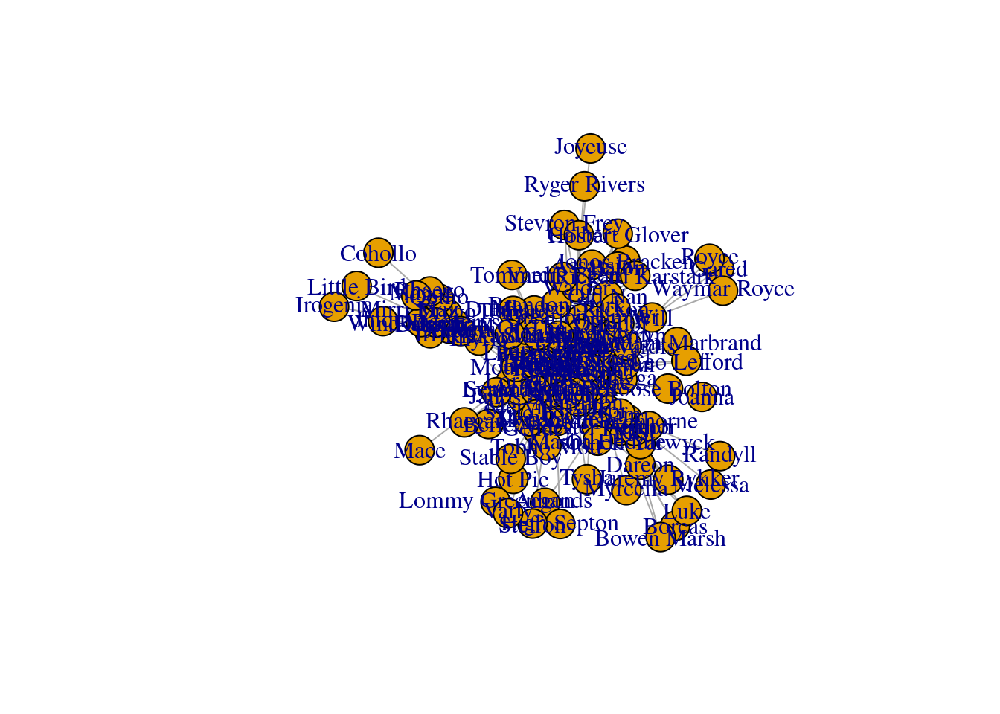
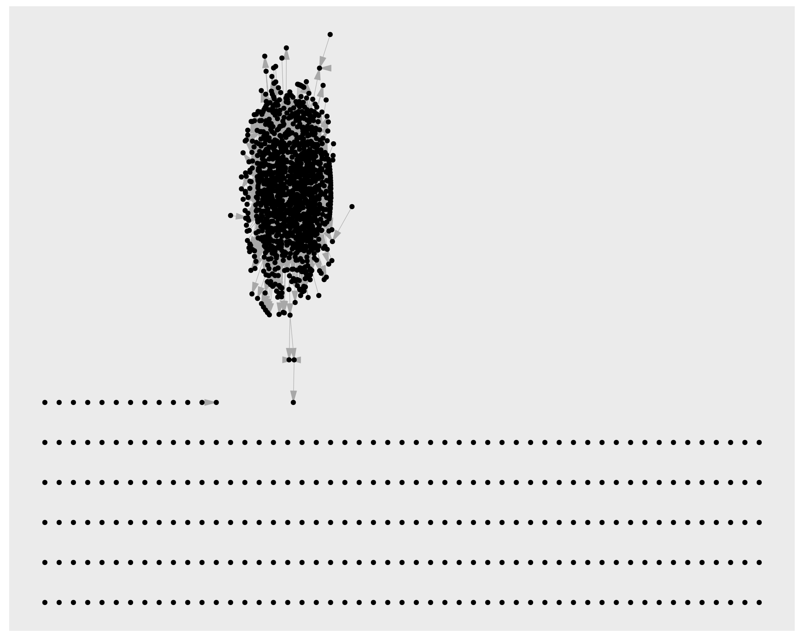
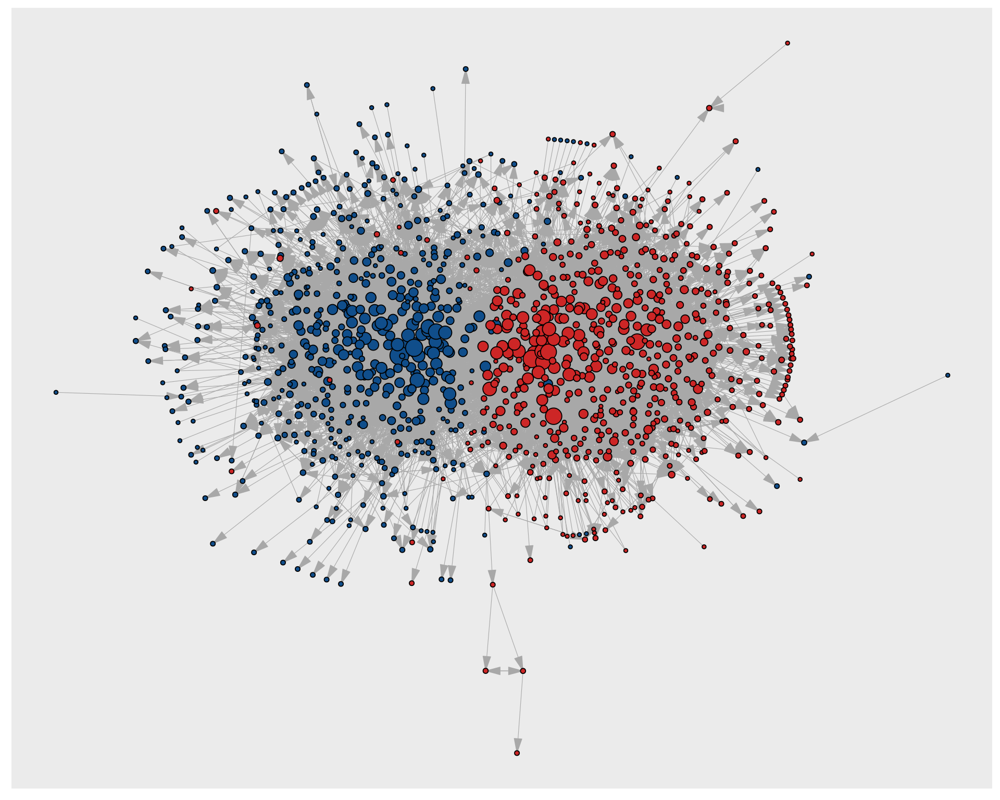
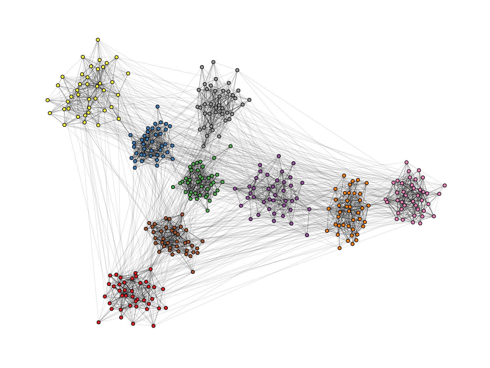

Network Visualizations in R
using ggraph and graphlayouts
2022-02-16
Introduction
Most network analytic tasks are fairly easy to do in R. But when it comes to visualizing networks, R may lack behind some standalone software tools. Not because it is not possible to produce nice figures, but rather because it requires some time to obtain pleasing results. Just take a look at the default output when plotting a network with the plot() function.
library(networkdata)
data("got")
gotS1 <- got[[1]]
plot(gotS1)
It is definitely possible to produce nice figures with the igraph package (Check out this wonderful tutorial), yet it may take some time to familiarize yourself with the syntax. Additionally, most of the layout algorithms of igraph are non-deterministic. This means that running the same plot call twice may produce different results.
In this tutorial, you will learn the basics of ggraph, the “ggplot2 of networks”, together with the graphlayouts package, which introduces additional useful layout algorithms to R. Arguably, using ggraph is not really easier than igraph. But once the underlying principle of the grammar of graphics is understood, you’ll see that it is actually quite intuitive to work with.
Required libraries
To run all the code in this tutorial, you need to install and load several packages.
install.packages(c("igraph", "graphlayouts", "ggraph","ggforce"))
devtools::install_github("schochastics/networkdata")Make sure you have at least the version given below. Some of the examples may not be backward compatible.
packageVersion("igraph")[1] '1.3.1'packageVersion("graphlayouts")[1] '0.8.0'packageVersion("ggraph")[1] '2.0.5'packageVersion("networkdata")[1] '0.1.11'packageVersion("ggforce")[1] '0.3.3'igraph is mostly used for its data structures and graphlayouts and ggraph for visualizations. The networkdata package contains a huge amount of example network data that always comes in handy for learning new visualization techniques.
library(igraph)
library(ggraph)
library(graphlayouts)
library(ggforce)Quick plots
It is always a good idea to take a quick look at your network before starting any analysis. This can be done with the function autograph() from the ggraph package.
autograph(gotS1)autograph() allows you to specify node/edge colours too but it really is only meant to give you a quick overview without writing a massive amount of code. Think of it as the plot() function for ggraph
Before we continue, we add some more node attributes to the GoT network that can be used during visualization.
# define a custom color palette
got_palette <- c(
"#1A5878", "#C44237", "#AD8941", "#E99093",
"#50594B", "#8968CD", "#9ACD32"
)
# compute a clustering for node colors
V(gotS1)$clu <- as.character(membership(cluster_louvain(gotS1)))
# compute degree as node size
V(gotS1)$size <- degree(gotS1)The basics of ggraph
Once you move beyond quick plots, you need to understand the basics of, or at least develop a feeling for, the grammar of graphics to work with ggraph.
Instead of explaining the grammar, let us directly jump into some code and work through it one line at a time.
ggraph(gotS1, layout = "stress") +
geom_edge_link0(aes(edge_width = weight), edge_colour = "grey66") +
geom_node_point(aes(fill = clu, size = size), shape = 21) +
geom_node_text(aes(filter = size >= 26, label = name), family = "serif") +
scale_fill_manual(values = got_palette) +
scale_edge_width(range = c(0.2, 3)) +
scale_size(range = c(1, 6)) +
theme_graph() +
theme(legend.position = "none")ggraph works with layers. Each layer adds a new feature to the plot and thus builds the figure step-by-step. We will work through each of the layers separately in the following sections.
Layout
ggraph(gotS1, layout = "stress")The first step is to compute a layout. The layout parameter specifies the algorithm to use. The “stress” layout is part of the graphlayouts package and is always a safe choice since it is deterministic and produces nice layouts for almost any graph. I would recommend to use it as your default choice. Other algorithms for, e.g., concentric layouts and clustered networks are described further down in this tutorial. For the sake of completeness, here is a list of layout algorithms of igraph.
c(
"layout_with_dh", "layout_with_drl", "layout_with_fr",
"layout_with_gem", "layout_with_graphopt", "layout_with_kk",
"layout_with_lgl", "layout_with_mds", "layout_with_sugiyama",
"layout_as_bipartite", "layout_as_star", "layout_as_tree"
)To use them, you just need the last part of the name.
ggraph(gotS1, layout = "dh") +
...Note that there technically is no right or wrong choice. All layout algorithms are in a sense arbitrary since we can choose x and y coordinates freely (compare this to ordinary data!). It is all mostly about aesthetics.
You can also precompute the layout with the create_layout() function. This makes sense in cases where the calculation of the layout takes very long and you want to play around with other visual aspects.
gotS1_layout <- create_layout(gotS1 = "stress")
ggraph(gotS1_layout) +
...Edges
geom_edge_link0(aes(width = weight), edge_colour = "grey66")The second layer specifies how to draw the edges. Edges can be drawn in many different ways as the list below shows.
c(
"geom_edge_arc", "geom_edge_arc0", "geom_edge_arc2", "geom_edge_density",
"geom_edge_diagonal", "geom_edge_diagonal0", "geom_edge_diagonal2",
"geom_edge_elbow", "geom_edge_elbow0", "geom_edge_elbow2", "geom_edge_fan",
"geom_edge_fan0", "geom_edge_fan2", "geom_edge_hive", "geom_edge_hive0",
"geom_edge_hive2", "geom_edge_link", "geom_edge_link0", "geom_edge_link2",
"geom_edge_loop", "geom_edge_loop0"
)You can do a lot of fancy things with these geoms but for a standard network plot, you should always stick with geom_edge_link0 since it simply draws a straight line between the endpoints. Some tools draw curved edges by default. While this may add some artistic value, it reduces readability. Always go with straight lines! If your network has multiple edges between two nodes, then you can switch to geom_edge_parallel().
In case you are wondering what the “0” stands for: The standard geom_edge_link() draws 100 dots on each edge compared to only two dots (the endpoints) in geom_edge_link0(). This is done to allow, e.g., gradients along the edge.
You can reproduce this figure by substituting
geom_edge_link(aes(edge_alpha = ..index..), edge_colour = "black")in the code above.
The drawback of using geom_edge_link() is that the time to render the plot increases and so does the size of the file if you export the plot (example) Typically, you do not need gradients along an edge. Hence, geom_edge_link0() should be your default choice to draw edges.
Within geom_edge_link0, you can specify the appearance of the edge, either by mapping edge attributes to aesthetics or setting them globally for the graph. Mapping attributes to aesthetics is done within aes(). In the example, we map the edge width to the edge attribute “weight”. ggraph then automatically scales the edge width according to the attribute. The colour of all edges is globally set to “grey66”.
The following aesthetics can be used within geom_edge_link0 either within aes() or globally:
- edge_colour (colour of the edge)
- edge_width (width of the edge)
- edge_linetype (linetype of the edge, defaults to “solid”)
- edge_alpha (opacity; a value between 0 and 1)
ggraph does not automatically draw arrows if your graph is directed. You need to do this manually using the arrow parameter.
geom_edge_link0(aes(...), ...,
arrow = arrow(
angle = 30, length = unit(0.15, "inches"),
ends = "last", type = "closed"
)
)The default arrowhead type is “open”, yet “closed” usually has a nicer appearance.
Nodes
geom_node_point(aes(fill = clu, size = size), shape = 21) +
geom_node_text(aes(filter = size >= 26, label = name), family = "serif")On top of the edge layer, we draw the node layer. Always draw the node layer above the edge layer. Otherwise, edges will be visible on top of nodes. There are slightly less geoms available for nodes.
c(
"geom_node_arc_bar", "geom_node_circle", "geom_node_label",
"geom_node_point", "geom_node_text", "geom_node_tile", "geom_node_treemap"
)The most important ones here are geom_node_point() to draw nodes as simple geometric objects (circles, squares,…) and geom_node_text() to add node labels. You can also use geom_node_label(), but this draws labels within a box.
The mapping of node attributes to aesthetics is similar to edge attributes. In the example code, we map the fill attribute of the node shape to the “clu” attribute, which holds the result of a clustering, and the size of the nodes to the attribute “size”. The shape of the node is globally set to 21.
The figure below shows all possible shapes that can be used for the nodes. 
Personally, I prefer “21” since it draws a border around the nodes. If you prefer another shape, say “19”, you have to be aware of several things. To change the color of shapes 1-20, you need to use the colour parameter. For shapes 21-25 you need to use fill. The colour parameter only controls the border for these cases.
The following aesthetics can be used within geom_node_point() either within aes() or globally:
- alpha (opacity; a value between 0 and 1)
- colour (colour of shapes 0-20 and border colour for 21-25)
- fill (fill colour for shape 21-25)
- shape (node shape; a value between 0 and 25)
- size (size of node)
- stroke (size of node border)
For geom_node_text(), there are a lot more options available, but the most important once are:
- label (attribute to be displayed as node label)
- colour (text colour)
- family (font to be used)
- size (font size)
Note that we also used a filter within aes() of geom_node_text(). The filter parameter allows you to specify a rule for when to apply the aesthetic mappings. The most frequent use case is for node labels (but can also be used for edges or nodes). In the example, we only display the node label if the size attribute is larger than 26.
Scales
scale_fill_manual(values = got_palette) +
scale_edge_width_continuous(range = c(0.2, 3)) +
scale_size_continuous(range = c(1, 6))The scale_* functions are used to control aesthetics that are mapped within aes(). You do not necessarily need to set them, since ggraph can take care of it automatically.
ggraph(gotS1, layout = "stress") +
geom_edge_link0(aes(edge_width = weight), edge_colour = "grey66") +
geom_node_point(aes(fill = clu, size = size), shape = 21) +
geom_node_text(aes(filter = size >= 26, label = name), family = "serif") +
theme_graph() +
theme(legend.position = "none")While the node fill and size seem reasonable, the edges are a little too thick. In general, it is always a good idea to add a scale_* for each aesthetic within aes().
What kind of scale_* function you need depends on the aesthetic and on the type of attribute you are mapping. Generally, scale functions are structured like this:
scale_<aes>_<variable type>().
The “aes” part is easy. Just us the type you specified within aes(). For edges, however, you have to prepend edge_. The “variable type” part depends on which scale the attribute is on. Before we continue, it may be a good idea to briefly discuss what aesthetics make sense for which variable type.
| aesthetic | variable type | notes |
|---|---|---|
| node size | continuous | |
| edge width | continuous | |
| node colour/fill | categorical/continuous | use a gradient for continuous variables |
| edge colour | continuous | categorical only if there are different types of edges |
| node shape | categorical | only if there are a few categories (1-5). Colour should be the preferred choice |
| edge linetype | categorical | only if there are a few categories (1-5). Colour should be the preferred choice |
| node/edge alpha | continuous |
The easiest to use scales are those for continuous variables mapped to edge width and node size (also the alpha value, which is not used here). While there are several parameters within scale_edge_width_continuous() and scale_size_continuous(), the most important one is “range” which fixes the minimum and maximum width/size. It usually suffices to adjust this parameter.
For continuous variables that are mapped to node/edge colour, you can use scale_colour_gradient() scale_colour_gradient2() or scale_colour_gradientn() (add edge_ before colour for edge colours). The difference between these functions is in how the gradient is constructed. gradient creates a two colour gradient (low-high). Simply specify the the two colours to be used (e.g. low = “blue”, high = “red”). gradient2 creates a diverging colour gradient (low-mid-high) (e.g. low = “blue”, mid = “white”, high = “red”) and gradientn a gradient consisting of more than three colours (specified with the colours parameter).
For categorical variables that are mapped to node colours (or fill in our example), you can use scale_fill_manual(). This forces you to choose a color for each category yourself. Simply create a vector of colors (see the got_palette) and pass it to the function with the parameter values.
ggraph then assigns the colors in the order of the unique values of the categorical variable. This are either the factor levels (if the variable is a factor) or the result of sorting the unique values (if the variable is a character).
sort(unique(V(gotS1)$clu))[1] "1" "2" "3" "4" "5" "6" "7"If you want more control over which value is mapped to which colour, you can pass the vector of colours as a named vector.
got_palette2 <- c(
"5" = "#1A5878", "3" = "#C44237", "2" = "#AD8941",
"1" = "#E99093", "4" = "#50594B", "7" = "#8968CD", "6" = "#9ACD32"
)Using your own colour palette gives your network a unique touch. If you can’t be bothered with choosing colours, you may want to consider scale_fill_brewer() and scale_colour_brewer(). The function offers all palettes available at colorbrewer2.org.
ggraph(gotS1, layout = "stress") +
geom_edge_link0(aes(edge_width = weight), edge_colour = "grey66") +
geom_node_point(aes(fill = clu, size = size), shape = 21) +
geom_node_text(aes(filter = size >= 26, label = name), family = "serif") +
scale_fill_brewer(palette = "Dark2") +
scale_edge_width_continuous(range = c(0.2, 3)) +
scale_size_continuous(range = c(1, 6)) +
theme_graph() +
theme(legend.position = "none")(Check out this github repo from Emil Hvitfeldt for a comprehensive list of color palettes available in R)
Themes
theme_graph() +
theme(legend.position = "none")themes control the overall look of the plot. There are a lot of options within the theme() function of ggplot2. Luckily, we really don’t need any of those. theme_graph() is used to erase all of the default ggplot theme (e.g. axis, background, grids, etc.) since they are irrelevant for networks. The only option worthwhile in theme() is legend.position, which we set to “none”, i.e. don’t show the legend.
The code below gives an example for a plot with a legend.
ggraph(gotS1, layout = "stress") +
geom_edge_link0(aes(edge_width = weight), edge_colour = "grey66") +
geom_node_point(aes(fill = clu, size = size), shape = 21) +
geom_node_text(aes(filter = size >= 26, label = name), family = "serif") +
scale_fill_manual(values = got_palette) +
scale_edge_width_continuous(range = c(0.2, 3)) +
scale_size_continuous(range = c(1, 6)) +
theme_graph() +
theme(legend.position = "bottom")Another example
Let us work through one more visualization using a very special data set. The “Grey’s Anatomy” hook-up network
data("greys")Start with the autograph call.
autograph(greys)The network consists of several components. Note that the igraph standard is to pack all components in a circle. The standard in graphlayouts is to arrange them in a rectangle. You can specify the bbox parameter to arrange the components differently. The plot above arranges all components on one level, but two levels may be desirable. You may need to experiment a bit with the parameter, but for this network, bbox=15 seems to work best (see below).
We will use this network to quickly illustrate what can be done with geom_edge_link2(). The function allows to interpolate node attributes between the start and end node along the edges. In the code below, we use the “position” attribute. The line which adds the node labels illustrates two further features of ggraph. First, aesthetics don’t need to be node attributes. Here, for instance, we calculate the degree and then map it to the font size. The second one is the repel = TRUE argument. This option places the node labels in a way that labels do not overlap.
ggraph(greys, "stress", bbox = 15) +
geom_edge_link2(aes(edge_colour = node.position), edge_width = 0.5) +
geom_node_point(aes(fill = sex), shape = 21, size = 3) +
geom_node_text(aes(label = name, size = degree(greys)),
family = "serif", repel = TRUE
) +
scale_edge_colour_brewer(palette = "Set1") +
scale_fill_manual(values = c("grey66", "#EEB422", "#424242")) +
scale_size(range = c(2, 5), guide = "none") +
theme_graph() +
theme(legend.position = "bottom")While the coloured edges look kind of artistic, we should go back to the “0” version.
ggraph(greys, "stress", bbox = 15) +
geom_edge_link0(edge_colour = "grey66", edge_width = 0.5) +
geom_node_point(aes(fill = sex), shape = 21, size = 3) +
geom_node_text(aes(label = name, size = degree(greys)),
family = "serif", repel = TRUE
) +
scale_fill_manual(values = c("grey66", "#EEB422", "#424242")) +
scale_size(range = c(2, 5), guide = "none") +
theme_graph() +
theme(legend.position = "bottom")Code through: Recreate the polblogs viz
Expand
In this section, we do a little code through to recreate the figure shown below.
 The network shows the linking between political blogs during the 2004 election in the US. Red nodes are conservative leaning blogs and blue ones liberal.
The network shows the linking between political blogs during the 2004 election in the US. Red nodes are conservative leaning blogs and blue ones liberal.
The dataset is included in the networkdata package.
data("polblogs")
# add a vertex attribute for the indegree
V(polblogs)$deg <- degree(polblogs, mode = "in")Let us start with a simple plot without any styling.
lay <- create_layout(polblogs, "stress")
ggraph(lay) +
geom_edge_link0(
edge_width = 0.2, edge_colour = "grey66",
arrow = arrow(
angle = 15, length = unit(0.15, "inches"),
ends = "last", type = "closed"
)
) +
geom_node_point()
There is obviously a lot missing. First, we delete all isolates and plot again.
polblogs <- delete.vertices(polblogs, which(degree(polblogs) == 0))
lay <- create_layout(polblogs, "stress")
ggraph(lay) +
geom_edge_link0(
edge_width = 0.2, edge_colour = "grey66",
arrow = arrow(
angle = 15, length = unit(0.1, "inches"),
ends = "last", type = "closed"
)
) +
geom_node_point()
The original does feature a small disconnected component, but we remove this here.
comps <- components(polblogs)
polblogs <- delete.vertices(polblogs, which(comps$membership == which.min(comps$csize)))
lay <- create_layout(polblogs, "stress")
ggraph(lay) +
geom_edge_link0(
edge_width = 0.2, edge_colour = "grey66",
arrow = arrow(
angle = 15, length = unit(0.15, "inches"),
ends = "last", type = "closed"
)
) +
geom_node_point()
Better, let’s start with some styling of the nodes.
ggraph(lay) +
geom_edge_link0(
edge_width = 0.2, edge_colour = "grey66",
arrow = arrow(
angle = 15, length = unit(0.15, "inches"),
ends = "last", type = "closed"
)
) +
geom_node_point(shape = 21, aes(fill = pol))The colors are obviously wrong, so we fix this with a scale_fill_manual(). Additionally, we map the degree to node size.
ggraph(lay) +
geom_edge_link0(
edge_width = 0.2, edge_colour = "grey66",
arrow = arrow(
angle = 15, length = unit(0.15, "inches"),
ends = "last", type = "closed"
)
) +
geom_node_point(shape = 21, aes(fill = pol, size = deg), show.legend = FALSE) +
scale_fill_manual(values = c("left" = "#104E8B", "right" = "firebrick3"))
The node sizes are also not that satisfactory, so we fix the range with scale_size().
ggraph(lay) +
geom_edge_link0(
edge_width = 0.2, edge_colour = "grey66",
arrow = arrow(
angle = 10, length = unit(0.1, "inches"),
ends = "last", type = "closed"
)
) +
geom_node_point(shape = 21, aes(fill = pol, size = deg), show.legend = FALSE) +
scale_fill_manual(values = c("left" = "#104E8B", "right" = "firebrick3")) +
scale_size(range = c(0.5, 7))
Now we move on to the edges. This is a bit more complicated since we have to create an edge variable first which indicates if an edge is within or between political orientations. This new variable is mapped to the edge color.
el <- get.edgelist(polblogs, names = FALSE)
el_pol <- cbind(V(polblogs)$pol[el[, 1]], V(polblogs)$pol[el[, 2]])
E(polblogs)$col <- ifelse(el_pol[, 1] == el_pol[, 2], el_pol[, 1], "mixed")
lay <- create_layout(polblogs, "stress")
ggraph(lay) +
geom_edge_link0(
edge_width = 0.2, aes(edge_colour = col),
arrow = arrow(
angle = 10, length = unit(0.1, "inches"),
ends = "last", type = "closed"
)
) +
geom_node_point(shape = 21, aes(fill = pol, size = deg), show.legend = FALSE) +
scale_fill_manual(values = c("left" = "#104E8B", "right" = "firebrick3")) +
scale_size(range = c(0.5, 7))Similar to the node colors, we add a scale_edge_colour_manual() to adjust the edge colors.
ggraph(lay) +
geom_edge_link0(
edge_width = 0.2, aes(edge_colour = col),
arrow = arrow(
angle = 10, length = unit(0.1, "inches"),
ends = "last", type = "closed"
), show.legend = FALSE
) +
geom_node_point(shape = 21, aes(fill = pol, size = deg), show.legend = FALSE) +
scale_fill_manual(values = c("left" = "#104E8B", "right" = "firebrick3")) +
scale_edge_colour_manual(values = c("left" = "#104E8B", "mixed" = "goldenrod", "right" = "firebrick3")) +
scale_size(range = c(0.5, 7))
Almost, but it seems there are a lot of yellow edges which run over blue edges. It looks as if these should run below according to the original viz. To achieve this, we use a filter trick. We add two geom_edge_link0() layers: First, for the mixed edges and then for the remaining edges. In that way, the mixed edges are getting plotted below.
ggraph(lay) +
geom_edge_link0(
edge_width = 0.2, aes(filter = (col == "mixed"), edge_colour = col),
arrow = arrow(
angle = 10, length = unit(0.1, "inches"),
ends = "last", type = "closed"
), show.legend = FALSE
) +
geom_edge_link0(
edge_width = 0.2, aes(filter = (col != "mixed"), edge_colour = col),
arrow = arrow(
angle = 10, length = unit(0.1, "inches"),
ends = "last", type = "closed"
), show.legend = FALSE
) +
geom_node_point(shape = 21, aes(fill = pol, size = deg), show.legend = FALSE) +
scale_fill_manual(values = c("left" = "#104E8B", "right" = "firebrick3")) +
scale_edge_colour_manual(values = c("left" = "#104E8B", "mixed" = "goldenrod", "right" = "firebrick3")) +
scale_size(range = c(0.5, 7))
Now lets just add the theme_graph().
ggraph(lay) +
geom_edge_link0(
edge_width = 0.2, aes(filter = (col == "mixed"), edge_colour = col),
arrow = arrow(
angle = 10, length = unit(0.1, "inches"),
ends = "last", type = "closed"
), show.legend = FALSE
) +
geom_edge_link0(
edge_width = 0.2, aes(filter = (col != "mixed"), edge_colour = col),
arrow = arrow(
angle = 10, length = unit(0.1, "inches"),
ends = "last", type = "closed"
), show.legend = FALSE
) +
geom_node_point(shape = 21, aes(fill = pol, size = deg), show.legend = FALSE) +
scale_fill_manual(values = c("left" = "#104E8B", "right" = "firebrick3")) +
scale_edge_colour_manual(values = c("left" = "#104E8B", "mixed" = "goldenrod", "right" = "firebrick3")) +
scale_size(range = c(0.5, 7)) +
theme_graph()That’s it!
Miscellaneous
Everything we covered above should be enough to produce nice network visualizations for scientific publications. However, ggraph has a lot more advanced functions/parameter settings to further enhance your visualization. If you are looking for something specific, it is always a good idea to read the documentation of the geoms.
Some things that I frequently use are the following:
- change the
end_capingeom_edge_link()to end edges before reaching the node. This is helpful for directed edges to not make the arrows disappear. legend.positionintheme()controls all legends at once. If you don’t want to show a specific legend, useguide = "none"in the respectivescale_*function.- use
scale_color_viridis_c()andscale_color_viridis_d(). The viridis colour palette makes plots easier to read by those with colorblindness and print well in grey scale.
The stress layout also works well with medium to large graphs.

The network shows the global football competition network between 2016-2018. It consists of ~5000 nodes (clubs) and ~15000 edges (games). Node colour corresponds to the confederation of the club.
If you want to go beyond 10k nodes, then you may want to switch to layout_with_pmds() or layout_with_sparse_stress() which are optimized to work with large graphs.
use the ggforce
The ggforce package works pretty nicely with ggraph. You can, for instance, use the geom_mark_*() functions to highlight clusters.
set.seed(665)
#create network with a group structure
g <- sample_islands(9, 40, 0.4, 15)
g <- igraph::simplify(g)
V(g)$grp <- as.character(rep(1:9, each = 40))
bb <- layout_as_backbone(g, keep = 0.4)
E(g)$col <- F
E(g)$col[bb$backbone] <- Tggraph(g,
layout = "manual",
x = bb$xy[, 1],
y = bb$xy[, 2]) +
geom_edge_link0(aes(col = col), width = 0.2) +
geom_node_point(aes(fill = grp), shape = 21, size = 3) +
geom_mark_hull(
aes(x, y, group = grp, fill = grp),
concavity = 4,
expand = unit(2, "mm"),
alpha = 0.25
) +
scale_color_brewer(palette = "Set1") +
scale_fill_brewer(palette = "Set1") +
scale_edge_color_manual(values = c(rgb(0, 0, 0, 0.3), rgb(0, 0, 0, 1))) +
theme_graph()+
theme(legend.position = "none")Of course you can also add a label to your clusters.
ggraph(g,
layout = "manual",
x = bb$xy[, 1],
y = bb$xy[, 2]) +
geom_edge_link0(aes(col = col), width = 0.2) +
geom_node_point(aes(fill = grp), shape = 21, size = 3) +
geom_mark_hull(
aes(x, y, group = grp, fill = grp, label=grp),
concavity = 4,
expand = unit(2, "mm"),
alpha = 0.25
) +
scale_color_brewer(palette = "Set1") +
scale_fill_brewer(palette = "Set1") +
scale_edge_color_manual(values = c(rgb(0, 0, 0, 0.3), rgb(0, 0, 0, 1))) +
theme_graph()+
theme(legend.position = "none")If you want to avoid node overlaps, you can use geom_node_voronoi(). So this is actually already implemented in {{ggraph}}, but originates from geom_voronoi_tile().
ggraph(g,
layout = "manual",
x = bb$xy[, 1],
y = bb$xy[, 2]) +
geom_edge_link0(aes(filter = !col, col = col), width = 0.2) +
geom_node_voronoi(
aes(x, y, fill = grp),
max.radius = 0.4,
expand = unit(-0.5, 'mm'),
colour = 'black'
) +
scale_color_brewer(palette = "Set1") +
scale_fill_brewer(palette = "Set1") +
scale_edge_color_manual(values = c(rgb(0, 0, 0, 0.3), rgb(0, 0, 0, 1))) +
theme(
legend.position = "none",
panel.grid = element_blank(),
axis.ticks = element_blank(),
axis.text = element_blank()
) +
theme_graph() +
theme(legend.position = "none")FAQ
I compiled some more specific tips in a blog post a while ago. I will highlight some FAQ from that post belo (I will update this section with more tips and tricks).
“How can I achieve that my directed edges stop at the node border, independent from the node size?”
This one has given me headaches for the longest time. No matter what I tried, I always ended up with something like the below plot.
# create a random network
set.seed(1071)
g <- sample_pa(30, 1)
V(g)$degree <- degree(g, mode = "in")
ggraph(g, "stress") +
geom_edge_link(
aes(end_cap = circle(node2.degree + 2, "pt")),
edge_colour = "black",
arrow = arrow(
angle = 10,
length = unit(0.15, "inches"),
ends = "last",
type = "closed"
)
) +
geom_node_point(aes(size = degree), col = "grey66", show.legend = FALSE) +
scale_size(range = c(3, 11)) +
theme_graph()The overlap can be avoided by using the I() function from base R, which treats the entries of a vector “as is”. So we know that if a node has degree 5, it will be mapped to a circle with radius (or diameter?) “5pt”. Since this means, that you have no control over the scaling, you need to do that beforehand.
# this function is borrowed from the ambient package
normalise <- function(x, from = range(x), to = c(0, 1)) {
x <- (x - from[1]) / (from[2] - from[1])
if (!identical(to, c(0, 1))) {
x <- x * (to[2] - to[1]) + to[1]
}
x
}
# map to the range you want
V(g)$degree <- normalise(V(g)$degree, to = c(3, 11))
ggraph(g, "stress") +
geom_edge_link(
aes(end_cap = circle(node2.degree + 2, "pt")),
edge_colour = "grey25",
arrow = arrow(
angle = 10,
length = unit(0.15, "inches"),
ends = "last",
type = "closed"
)
) +
geom_node_point(aes(size = I(degree)), col = "grey66") +
theme_graph()I would not be surprised though if there is an even easier fix for this problem.
“How can I lower the opacity of nodes without making edges visible underneath?”
One of the rules I try to follow is that edges should not be visible on top of nodes. Usually that is easy to achieve by drawing the edges before the nodes. But if you want to lower the opacity of nodes, they do become visible again.
g <- sample_gnp(20, 0.5)
V(g)$degree <- degree(g)
ggraph(g, "stress") +
geom_edge_link(edge_colour = "grey66") +
geom_node_point(
size = 8,
aes(alpha = degree),
col = "red",
show.legend = FALSE
) +
theme_graph()The solution is rather simple. Just add a node layer with the same aesthetics below with alpha=1 (default) and color="white" (or the background color of the plot).
ggraph(g, "stress") +
geom_edge_link(edge_colour = "grey66") +
geom_node_point(size = 8, col = "white") +
geom_node_point(
aes(alpha = degree),
size = 8,
col = "red",
show.legend = FALSE
) +
theme_graph()Of course you could also use start_cap and end_cap here, but you may have to fiddle again as in the last example.
“How can I enhance readability of node labels in hairball graphs?”
Sometimes it is really hard to make labels readable when the network is very cluttered
g <- sample_gnp(50, 0.7)
V(g)$name <- sapply(1:50, function(x) paste0(sample(LETTERS, 4), collapse = ""))
E(g)$weight <- runif(ecount(g))
ggraph(g) +
geom_edge_link0(aes(edge_color = weight, edge_width = weight), show.legend = FALSE) +
geom_node_point(size = 8, color = "#44a6c6") +
geom_node_text(aes(label = name), fontface = "bold") +
scale_edge_color_continuous(low = "grey66", high = "black") +
scale_edge_width(range = c(0.1, 0.5)) +
theme_graph() +
coord_fixed()Here you can make use of the fact that the layout of the nodes are stored in a “hidden” data frame when a ggraph object is constructed. That means you can use other geoms from other packages. In this case, the shadowtext package as shown below.
ggraph(g,"stress") +
geom_edge_link0(aes(edge_color = weight, edge_width = weight), show.legend = FALSE) +
geom_node_point(size = 8, color = "#44a6c6") +
shadowtext::geom_shadowtext(aes(x, y, label = name), color = "black", size = 4, bg.colour = "white") +
scale_edge_color_continuous(low = "grey66", high = "black") +
scale_edge_width(range = c(0.1, 0.5)) +
theme_graph() +
coord_fixed()snahelper
Even with a lot of experience, it may still be a painful process to produce nice looking figures by writing ggraph code. Enter the snahelper.
install.packages("snahelper")The snahelper is an RStudio addin which provides you with a GUI to plot networks. Instead of writing code, you simply use drop-down menus to assign attributes to aesthetics or change appearances globally. One great feature of the addin is that you can adjust the position of nodes individually if you are not satisfied with their location. Once you are done, you can either directly export the figure to png or automatically insert the code to produce the figure into your script. That way, you can review the code and hopefully learn something from it. Below if a demo that shows its functionality.

To use the addin, simply highlight the variable name of your network within an R script and choose the SNAhelper from the Addins drop-down menu within RStudio. You can find more about the Addin on its dedicated pkgdown page
Advanced layouts
While “stress” is the key layout algorithm in graphlayouts, there are other, more specialized layouts that can be used for different purposes. In this part, we work through some examples with concentric layouts and learn how to disentangle extreme “hairball” networks.
Concentric layouts
Circular layouts are generally not advisable. Concentric circles, on the other hand, help to emphasize the position of certain nodes in the network. The graphlayouts package has two function to create concentric layouts, layout_with_focus() and layout_with_centrality().
The first one allows to focus the network on a specific node and arrange all other nodes in concentric circles (depending on the geodesic distance) around it. Below we focus on the character Ned Stark.
ggraph(gotS1, layout = "focus", focus = 1) +
geom_edge_link0(aes(edge_width = weight), edge_colour = "grey66") +
geom_node_point(aes(fill = clu, size = size), shape = 21) +
geom_node_text(aes(filter = (name == "Ned"), size = size, label = name),
family = "serif"
) +
scale_edge_width_continuous(range = c(0.2, 1.2)) +
scale_size_continuous(range = c(1, 5)) +
scale_fill_manual(values = got_palette) +
coord_fixed() +
theme_graph() +
theme(legend.position = "none")The parameter focus in the first line is used to choose the node id of the focal node. The function coord_fixed() is used to always keep the aspect ratio at one (i.e. the circles are always displayed as a circle and not an ellipse).
The function draw_circle() can be used to add the circles explicitly.
ggraph(gotS1, layout = "focus", focus = 1) +
draw_circle(col = "#00BFFF", use = "focus", max.circle = 3) +
geom_edge_link0(aes(width = weight), edge_colour = "grey66") +
geom_node_point(aes(fill = clu, size = size), shape = 21) +
geom_node_text(aes(filter = (name == "Ned"), size = size, label = name),
family = "serif"
) +
scale_edge_width_continuous(range = c(0.2, 1.2)) +
scale_size_continuous(range = c(1, 5)) +
scale_fill_manual(values = got_palette) +
coord_fixed() +
theme_graph() +
theme(legend.position = "none")layout_with_centrality() works in a similar way. You can specify any centrality index (or any numeric vector for that matter), and create a concentric layout where the most central nodes are put in the center and the most peripheral nodes in the biggest circle. The numeric attribute used for the layout is specified with the cent parameter. Here, we use the weighted degree of the characters.
ggraph(gotS1, layout = "centrality", cent = graph.strength(gotS1)) +
geom_edge_link0(aes(edge_width = weight), edge_colour = "grey66") +
geom_node_point(aes(fill = clu, size = size), shape = 21) +
geom_node_text(aes(size = size, label = name), family = "serif") +
scale_edge_width_continuous(range = c(0.2, 0.9)) +
scale_size_continuous(range = c(1, 8)) +
scale_fill_manual(values = got_palette) +
coord_fixed() +
theme_graph() +
theme(legend.position = "none")(Concentric layouts are not only helpful to focus on specific nodes, but also make for a good tool to visualize ego networks.)
Backbone layout
layout_as_backbone() is a layout algorithm that can help emphasize hidden group structures. To illustrate the performance of the algorithm, we create an artificial network with a subtle group structure using sample_islands() from igraph.
g <- sample_islands(9, 40, 0.4, 15)
g <- simplify(g)
V(g)$grp <- as.character(rep(1:9, each = 40))The network consists of 9 groups with 40 vertices each. The density within each group is 0.4 and there are 15 edges running between each pair of groups. Let us try to visualize the network with what we have learned so far.
ggraph(g, layout = "stress") +
geom_edge_link0(edge_colour = "black", edge_width = 0.1, edge_alpha = 0.5) +
geom_node_point(aes(fill = grp), shape = 21) +
scale_fill_brewer(palette = "Set1") +
theme_graph() +
theme(legend.position = "none")As you can see, the graph seems to be a proper “hairball” without any special structural features standing out. In this case, though, we know that there should be 9 groups of vertices that are internally more densely connected than externally. To uncover this group structure, we turn to the “backbone layout”.
bb <- layout_as_backbone(g, keep = 0.4)
E(g)$col <- FALSE
E(g)$col[bb$backbone] <- TRUEThe idea of the algorithm is as follows. For each edge, an embededness score is calculated which serves as an edge weight attribute. These weights are then ordered and only the edges with the highest score are kept. The number of edges to keep is controlled with the keep parameter. In our example, we keep the top 40%. The parameter usually requires some experimenting to find out what works best. Since this may result in an unconnected network, we add all edges of the union of all maximum spanning trees. The resulting network is the “backbone” of the original network and the “stress” layout algorithm is applied to this network. Once the layout is calculated, all edges are added back to the network.
The output of the function are the x and y coordinates for nodes and a vector that gives the ids of the edges in the backbone network. In the code above, we use this vector to create a binary edge attribute that indicates if an edge is part of the backbone or not.
To use the coordinates, we set the layout parameter to “manual” and provide the x and y coordinates as parameters.
ggraph(g, layout = "manual", x = bb$xy[, 1], y = bb$xy[, 2]) +
geom_edge_link0(aes(edge_colour = col), edge_width = 0.1) +
geom_node_point(aes(fill = grp), shape = 21) +
scale_fill_brewer(palette = "Set1") +
scale_edge_color_manual(values = c(rgb(0, 0, 0, 0.3), rgb(0, 0, 0, 1))) +
theme_graph() +
theme(legend.position = "none")
The groups are now clearly visible! Of course the network used in the example is specifically tailored to illustrate the power of the algorithm. Using the backbone layout in real world networks may not always result in such a clear division of groups. It should thus not be seen as a universal remedy for drawing hairball networks. Keep in mind: It can only emphasize a hidden group structure if it exists.
The plot below shows an empirical example where the algorithm was able to uncover a hidden group structure. The network shows facebook friendships of a university in the US. Node colour corresponds to dormitory of students. Left is the ordinary stress layout and right the backbone layout.
Dynamic networks
People regularly ask me if it is possible to animate a network evolution with ggraph and gganimate. Unfortunately this is not yet possible. But fear not! There is a way to still get it done with some hacking around the ggraph package. I will walk through this hack below but hope that it will eventually become obsolete.
For this part of the tutorial, you will need two additional packages.
library(gganimate)
library(ggplot2)
library(patchwork)We will be using the 50 actor excerpt from the Teenage Friends and Lifestyle Study from the RSiena data repository as an example. The data is part of the networkdata package.
data("s50")The dataset consists of three networks with 50 actors each and a vertex attribute for the smoking behaviour of students. As a first step, we need to create a layout for all three networks. You can basically use any type of layout for each network, but I’d recommend layout_as_dynamic() from my very own package {{graphlayouts}}. The algorithm calculates a reference layout which is a layout of the union of all networks and individual layouts based on stress minimization and combines those in a linear combination which is controlled by the alpha parameter. For alpha=1, only the reference layout is used and all graphs have the same layout. For alpha=0, the stress layout of each individual graph is used. Values in-between interpolate between the two layouts.
xy <- layout_as_dynamic(s50, alpha = 0.2)Now you could use {{ggraph}} and {{patchwork}} to produce a static plot with all networks side-by-side.
pList <- vector("list", length(s50))
for (i in 1:length(s50)) {
pList[[i]] <- ggraph(s50[[i]], layout = "manual", x = xy[[i]][, 1], y = xy[[i]][, 2]) +
geom_edge_link0(edge_width = 0.6, edge_colour = "grey66") +
geom_node_point(shape = 21, aes(fill = as.factor(smoke)), size = 6) +
geom_node_text(label = 1:50, repel = FALSE, color = "white", size = 4) +
scale_fill_manual(
values = c("forestgreen", "grey25", "firebrick"),
guide = ifelse(i != 2, "none", "legend"),
name = "smoking",
labels = c("never", "occasionally", "regularly")
) +
theme_graph() +
theme(legend.position = "bottom") +
labs(title = paste0("Wave ", i))
}
wrap_plots(pList)This is nice but of course we want to animate the changes. This is where we say goodbye to ggraph and hello to good-old ggplot2. First, we create a list of data frames for all nodes and add the layout to it.
nodes_lst <- lapply(1:length(s50), function(i) {
cbind(igraph::as_data_frame(s50[[i]], "vertices"),
x = xy[[i]][, 1], y = xy[[i]][, 2], frame = i
)
})This was the easy part, because all nodes are present in all time frames so there is not much to do. Edges will be a lot trickier.
edges_lst <- lapply(1:length(s50), function(i) {
cbind(igraph::as_data_frame(s50[[i]], "edges"), frame = i)
})
edges_lst <- lapply(1:length(s50), function(i) {
edges_lst[[i]]$x <- nodes_lst[[i]]$x[match(edges_lst[[i]]$from, nodes_lst[[i]]$name)]
edges_lst[[i]]$y <- nodes_lst[[i]]$y[match(edges_lst[[i]]$from, nodes_lst[[i]]$name)]
edges_lst[[i]]$xend <- nodes_lst[[i]]$x[match(edges_lst[[i]]$to, nodes_lst[[i]]$name)]
edges_lst[[i]]$yend <- nodes_lst[[i]]$y[match(edges_lst[[i]]$to, nodes_lst[[i]]$name)]
edges_lst[[i]]$id <- paste0(edges_lst[[i]]$from, "-", edges_lst[[i]]$to)
edges_lst[[i]]$status <- TRUE
edges_lst[[i]]
})
head(edges_lst[[1]]) from to frame x y xend yend id status
1 V1 V11 1 1.70772 0.820757 2.13831 -0.118910 V1-V11 TRUE
2 V1 V14 1 1.70772 0.820757 2.29096 0.864795 V1-V14 TRUE
3 V2 V7 1 3.72090 -0.487140 4.04571 -1.081084 V2-V7 TRUE
4 V2 V11 1 3.72090 -0.487140 2.13831 -0.118910 V2-V11 TRUE
5 V3 V4 1 -4.60678 -2.892838 -3.57652 -2.931886 V3-V4 TRUE
6 V3 V9 1 -4.60678 -2.892838 -5.04925 -3.675259 V3-V9 TRUEWe have expanded the edge data frame in a way that also includes the coordinates of the endpoints from the layout that we calculated earlier.
Now we create a helper matrix which includes all edges that are present in any of the networks
all_edges <- do.call("rbind", lapply(s50, get.edgelist))
all_edges <- all_edges[!duplicated(all_edges), ]
all_edges <- cbind(all_edges, paste0(all_edges[, 1], "-", all_edges[, 2]))This is used to impute the edges into all networks. So any edge that is not present in time frame two and three gets added to time frame one. But to keep track of these, we set there status to FALSE.
edges_lst <- lapply(1:length(s50), function(i) {
idx <- which(!all_edges[, 3] %in% edges_lst[[i]]$id)
if (length(idx != 0)) {
tmp <- data.frame(from = all_edges[idx, 1], to = all_edges[idx, 2], id = all_edges[idx, 3])
tmp$x <- nodes_lst[[i]]$x[match(tmp$from, nodes_lst[[i]]$name)]
tmp$y <- nodes_lst[[i]]$y[match(tmp$from, nodes_lst[[i]]$name)]
tmp$xend <- nodes_lst[[i]]$x[match(tmp$to, nodes_lst[[i]]$name)]
tmp$yend <- nodes_lst[[i]]$y[match(tmp$to, nodes_lst[[i]]$name)]
tmp$frame <- i
tmp$status <- FALSE
edges_lst[[i]] <- rbind(edges_lst[[i]], tmp)
}
edges_lst[[i]]
})Why are we doing this? After a lot of experimenting, I came to the conclusion that it is always best to draw all edges, but use zero opacity if status = FALSE. In that way, one gets a smoother transition for edges that (dis)appear. There are probably other workarounds though.
In the last step, we create a data frame out of the lists.
edges_df <- do.call("rbind", edges_lst)
nodes_df <- do.call("rbind", nodes_lst)
head(edges_df) from to frame x y xend yend id status
1 V1 V11 1 1.70772 0.820757 2.13831 -0.118910 V1-V11 TRUE
2 V1 V14 1 1.70772 0.820757 2.29096 0.864795 V1-V14 TRUE
3 V2 V7 1 3.72090 -0.487140 4.04571 -1.081084 V2-V7 TRUE
4 V2 V11 1 3.72090 -0.487140 2.13831 -0.118910 V2-V11 TRUE
5 V3 V4 1 -4.60678 -2.892838 -3.57652 -2.931886 V3-V4 TRUE
6 V3 V9 1 -4.60678 -2.892838 -5.04925 -3.675259 V3-V9 TRUEhead(nodes_df) name smoke x y frame
V1 V1 2 1.70772 0.820757 1
V2 V2 3 3.72090 -0.487140 1
V3 V3 1 -4.60678 -2.892838 1
V4 V4 1 -3.57652 -2.931886 1
V5 V5 1 -2.48950 -3.316815 1
V6 V6 1 -1.06535 -5.068062 1And that’s it in terms of data wrangling. All that is left is to plot/animate the data.
ggplot() +
geom_segment(
data = edges_df,
aes(x = x, xend = xend, y = y, yend = yend, group = id, alpha = status),
show.legend = FALSE
) +
geom_point(
data = nodes_df, aes(x, y, group = name, fill = as.factor(smoke)),
shape = 21, size = 4, show.legend = FALSE
) +
scale_fill_manual(values = c("forestgreen", "grey25", "firebrick")) +
scale_alpha_manual(values = c(0, 1)) +
ease_aes("quadratic-in-out") +
transition_states(frame, state_length = 0.5, wrap = FALSE) +
labs(title = "Wave {closest_state}") +
theme_void()
Multilevel networks
In this section, you will get to know layout_as_multilevel(), a layout algorithm in the raphlayouts package which can be use to visualize multilevel networks.
A multilevel network consists of two (or more) levels with different node sets and intra-level ties. For instance, one level could be scientists and their collaborative ties and the second level are labs and ties among them, and inter-level edges are the affiliations of scientists and labs.
The graphlayouts package contains an artificial multilevel network which will be used to illustrate the algorithm.
data("multilvl_ex")The package assumes that a multilevel network has a vertex attribute called lvl which holds the level information (1 or 2).
The underlying algorithm of layout_as_multilevel() has three different versions, which can be used to emphasize different structural features of a multilevel network.
Independent of which option is chosen, the algorithm internally produces a 3D layout, where each level is positioned on a different y-plane. The 3D layout is then mapped to 2D with an isometric projection. The parameters alpha and beta control the perspective of the projection. The default values seem to work for many instances, but may not always be optimal. As a rough guideline: beta rotates the plot around the y axis (in 3D) and alpha moves the POV up or down.
Complete layout
A layout for the complete network can be computed via layout_as_multilevel() setting type = "all". Internally, the algorithm produces a constrained 3D stress layout (each level on a different y plane) which is then projected to 2D. This layout ignores potential differences in each level and optimizes only the overall layout.
xy <- layout_as_multilevel(multilvl_ex, type = "all", alpha = 25, beta = 45)To visualize the network with ggraph, you may want to draw the edges for each level (and inter level edges) with a different edge geom. This gives you more flexibility to control aesthetics and can easily be achieved with a filter.
ggraph(multilvl_ex, "manual", x = xy[, 1], y = xy[, 2]) +
geom_edge_link0(
aes(filter = (node1.lvl == 1 & node2.lvl == 1)),
edge_colour = "firebrick3",
alpha = 0.5,
edge_width = 0.3
) +
geom_edge_link0(
aes(filter = (node1.lvl != node2.lvl)),
alpha = 0.3,
edge_width = 0.1,
edge_colour = "black"
) +
geom_edge_link0(
aes(filter = (node1.lvl == 2 &
node2.lvl == 2)),
edge_colour = "goldenrod3",
edge_width = 0.3,
alpha = 0.5
) +
geom_node_point(aes(shape = as.factor(lvl)), fill = "grey25", size = 3) +
scale_shape_manual(values = c(21, 22)) +
theme_graph() +
coord_cartesian(clip = "off", expand = TRUE) +
theme(legend.position = "none")Separate layouts for both levels
In many instances, there may be different structural properties inherent to the levels of the network. In that case, two layout functions can be passed to layout_as_multilevel() to deal with these differences. In our artificial network, level 1 has a hidden group structure and level 2 has a core-periphery structure.
To use this layout option, set type = "separate" and specify two layout functions with FUN1 and FUN2. You can change internal parameters of these layout functions with named lists in the params1 and params2 argument. Note that this version optimizes inter-level edges only minimally. The emphasis is on the intra-level structures.
xy <- layout_as_multilevel(multilvl_ex,
type = "separate",
FUN1 = layout_as_backbone,
FUN2 = layout_with_stress,
alpha = 25, beta = 45
)Again, try to include an edge geom for each level.
cols2 <- c(
"#3A5FCD", "#CD00CD", "#EE30A7", "#EE6363",
"#CD2626", "#458B00", "#EEB422", "#EE7600"
)
ggraph(multilvl_ex, "manual", x = xy[, 1], y = xy[, 2]) +
geom_edge_link0(aes(
filter = (node1.lvl == 1 & node2.lvl == 1),
edge_colour = col
),
alpha = 0.5, edge_width = 0.3
) +
geom_edge_link0(
aes(filter = (node1.lvl != node2.lvl)),
alpha = 0.3,
edge_width = 0.1,
edge_colour = "black"
) +
geom_edge_link0(aes(
filter = (node1.lvl == 2 & node2.lvl == 2),
edge_colour = col
),
edge_width = 0.3, alpha = 0.5
) +
geom_node_point(aes(
fill = as.factor(grp),
shape = as.factor(lvl),
size = nsize
)) +
scale_shape_manual(values = c(21, 22)) +
scale_size_continuous(range = c(1.5, 4.5)) +
scale_fill_manual(values = cols2) +
scale_edge_color_manual(values = cols2, na.value = "grey12") +
scale_edge_alpha_manual(values = c(0.1, 0.7)) +
theme_graph() +
coord_cartesian(clip = "off", expand = TRUE) +
theme(legend.position = "none")Fix only one level
This layout can be used to emphasize one intra-level structure. The layout of the second level is calculated in a way that optimizes inter-level edge placement. Set type = "fix1" and specify FUN1 and possibly params1 to fix level 1 or set type = "fix2" and specify FUN2 and possibly params2 to fix level 2.
xy <- layout_as_multilevel(multilvl_ex,
type = "fix2",
FUN2 = layout_with_stress,
alpha = 25, beta = 45
)
ggraph(multilvl_ex, "manual", x = xy[, 1], y = xy[, 2]) +
geom_edge_link0(aes(
filter = (node1.lvl == 1 & node2.lvl == 1),
edge_colour = col
),
alpha = 0.5, edge_width = 0.3
) +
geom_edge_link0(
aes(filter = (node1.lvl != node2.lvl)),
alpha = 0.3,
edge_width = 0.1,
edge_colour = "black"
) +
geom_edge_link0(aes(
filter = (node1.lvl == 2 & node2.lvl == 2),
edge_colour = col
),
edge_width = 0.3, alpha = 0.5
) +
geom_node_point(aes(
fill = as.factor(grp),
shape = as.factor(lvl),
size = nsize
)) +
scale_shape_manual(values = c(21, 22)) +
scale_size_continuous(range = c(1.5, 4.5)) +
scale_fill_manual(values = cols2) +
scale_edge_color_manual(values = cols2, na.value = "grey12") +
scale_edge_alpha_manual(values = c(0.1, 0.7)) +
theme_graph() +
coord_cartesian(clip = "off", expand = TRUE) +
theme(legend.position = "none")
3D with threejs
Instead of the default 2D projection, layout_as_multilevel() can also return the 3D layout by setting project2d = FALSE. The 3D layout can then be used with e.g. threejs to produce an interactive 3D visualization.
library(threejs)
xyz <- layout_as_multilevel(multilvl_ex,
type = "separate",
FUN1 = layout_as_backbone,
FUN2 = layout_with_stress,
project2D = FALSE
)
multilvl_ex$layout <- xyz
V(multilvl_ex)$color <- c("#00BFFF", "#FF69B4")[V(multilvl_ex)$lvl]
V(multilvl_ex)$vertex.label <- V(multilvl_ex)$name
graphjs(multilvl_ex, bg = "black", vertex.shape = "sphere")Further reading
The tutorial “Network Analysis and Visualization with R and igraph” by Katherine Ognyanova (link) comes with in-depth explanations of the built-in plotting function of igraph.
For further help on ggraph see the blog posts on layouts (link), nodes (link) and edges (link) by @thomasp85. Thomas is also the creator of tidygraph and there is also an introductory post on his blog (link).
More details and algorithms of the graphlayouts package can be found on my blog (link1, link2) and on the pkgdown page of graphlayouts.